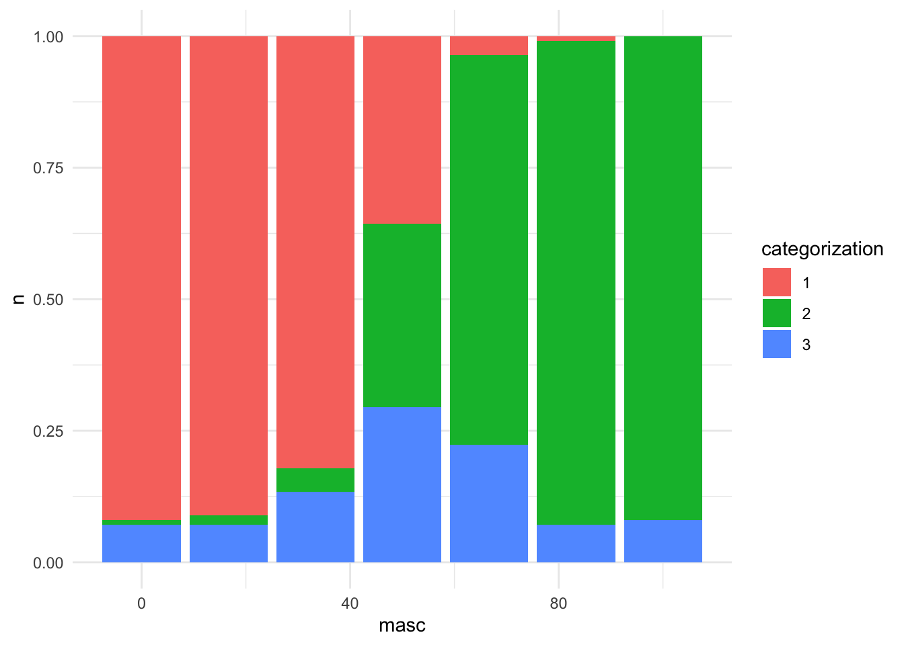
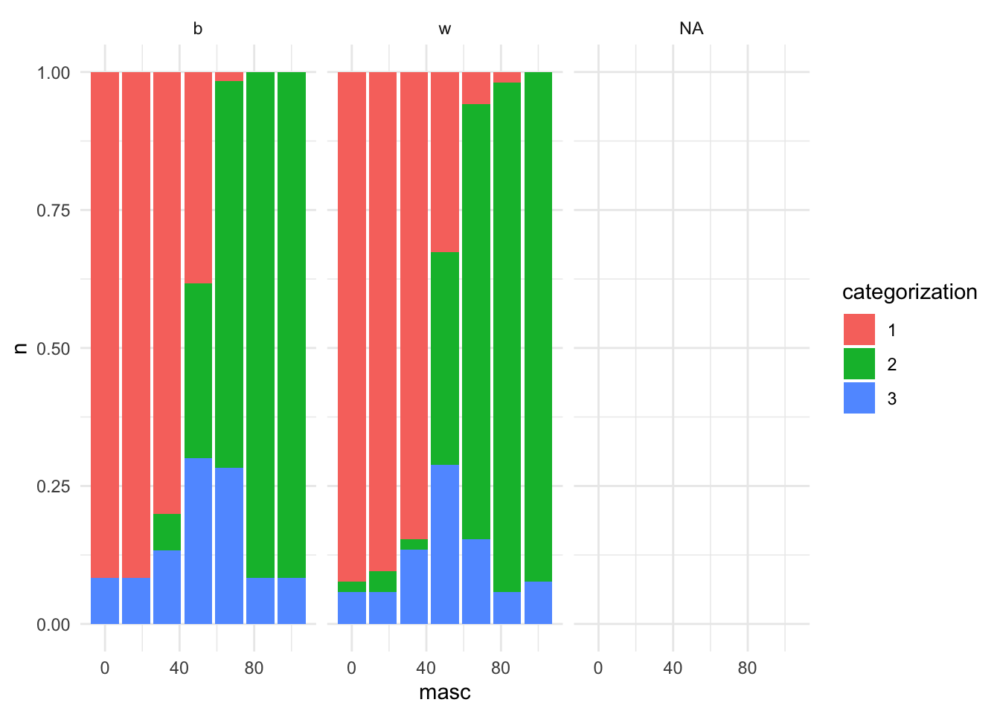

d <- read.csv("data/cat2_pronounpilot.csv") %>%
mutate(across(!starts_with("Gender"), as.character))
d <- read.csv("data/cat2_pronounpilot.csv") %>%
mutate(across(!starts_with("Gender"), as.character)) %>%
mutate(id = 1:nrow(.)) %>%
#arrange(condition.1) %>%
pivot_longer(
cols = !c(id, Age, starts_with("Gender"), starts_with("choose"), contains("assign"), starts_with("Prolific"), starts_with("TIME")),
names_to = "face",
values_to = "categorization") %>%
#separate(face, c("condition", "face", "morph", "scale")) %>%
select(id, face, categorization, Age, Gender, starts_with("Gender")) %>%
filter(!categorization == "") %>%
separate(face, c("condition", "face", "morph", "scale")) %>%
mutate(race = substr(face, 1,1),
masc = recode(morph, "0" = "0", "1" = "16.67", "2"= "33.33","3" = "50",
"4" = "66.67", "5" ="83.33", "6" = "100")) %>%
mutate(masc = as.numeric(masc)) %>%
mutate(masc = ifelse(race != "w", masc, 100 - masc))pronoun pilot
What’s this?
This is the analyses for the pronoun pilot. See my pm for why I did this analysis. This is data for a pilot where 20 people rated 20 faces on the basis of which pronoun they would use to refer to the person with that particular face. Each persoj looked at 32 faces, both black and white
Okay, so we’ve got the data, let’s plot it ouuuut! So! It looks like people are more likely to use hen than they are to categorize the person as… other or I don’t know. Interesting!
d %>%
group_by(masc, race) %>%
count(categorization) %>%
ggplot(aes(x=masc, y=n, fill=categorization)) +
geom_bar(stat="identity", position = "fill")+
theme_minimal()Warning: Removed 5 rows containing missing values (`position_stack()`).
Let’s look at what happens if we break it down to the individual level. Just looking at this suggest two things. First, the increase in
d %>%
group_by(masc, id) %>%
count(categorization) %>%
ggplot(aes(x=masc, y=n, fill=categorization)) +
geom_bar(stat="identity", position = "fill")+
facet_wrap(~id)+
theme_minimal()Warning: Removed 20 rows containing missing values (`position_stack()`).d %>%
group_by(masc, race) %>%
count(categorization) %>%
ggplot(aes(x=masc, y=n, fill=categorization)) +
geom_bar(stat="identity", position = "fill")+
facet_wrap(~race)+
theme_minimal()Warning: Removed 5 rows containing missing values (`position_stack()`).